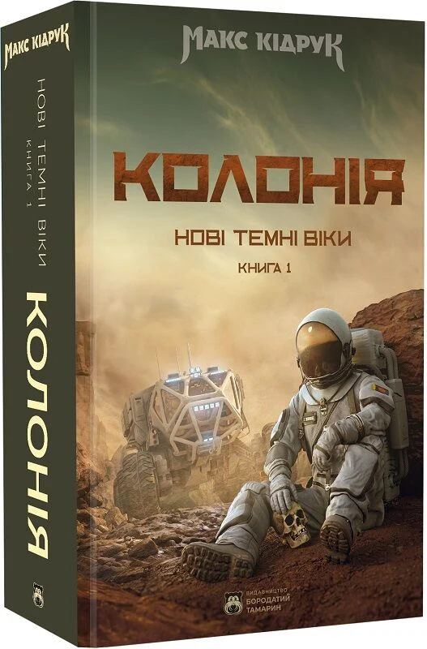
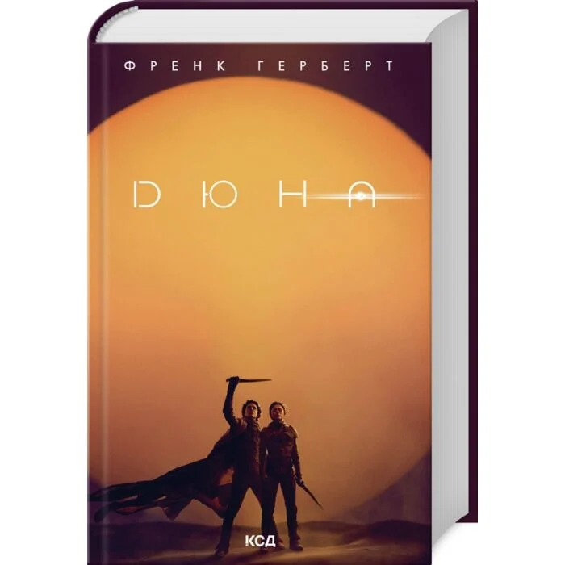

1984
Класичний роман-антиутопія про тоталітарне суспільство, контроль над інформацією та боротьбу за свободу думки.
Вебзастосунок для пошуку видань, ознайомлення з новинками та формування персонального списку читання.
BookShelf — це інформаційний каталог для книголюбів, який поєднує зручний пошук художньої та технічної літератури з можливістю вести власний трекер прочитаного.
На цьому етапі реалізовано семантичну HTML5-структуру та базове візуальне оформлення засобами CSS. У наступних версіях застосунку з'являться інтерактивний пошук видань, фільтрація за жанрами та динамічне керування списком книг.
Переглянути новинкиКласичний роман-антиутопія про тоталітарне суспільство, контроль над інформацією та боротьбу за свободу думки.

Подарункове видання збірки поетичних творів, що стала фундаментом нової української літератури.

Культова науково-фантастична сага про пустельну планету Арракіс, боротьбу великих домів та пошук власного призначення.
У каталозі доступні видання за основними тематичними напрямами:
Приклад черги книг, запланованих до прочитання найближчим часом:
Електронна пошта для пропозицій щодо додавання нових видань: info@bookshelf-catalog.ua
Більше міжнародних рейтингів і відгуків читачів можна знайти на платформі Goodreads.